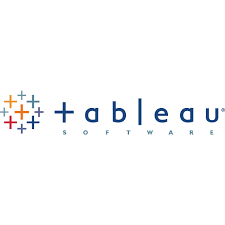
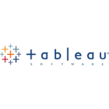

During these projects i have applied Sql querys to explore sakila database and find the answer of analying questions.
I use Sql alchemy libraray in python to intract with hawaii.sqlite database and Analysis and Explor the Climate for Hawaii,and visualized with matplotlib .
I use tableau to make dashboard from the 3 diffrent profit analysis on supper sotre file.